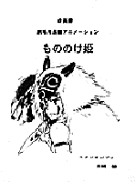

屋久島最後の夕食
94年8月
宮崎監督、一人で準備に入る。ストーリー・ライン、イメージ・ボードの作成。
94年12月
※途中、「On Your Mark」制作のため中断。
95.4.19 (水)
宮崎監督による「もののけ姫」企画書完成。
|
 |
95.5.14 (日)
屋久島へ5泊6日の予定でロケハンに出発。参加者は、宮崎監督、安藤作画監督、山本二三、田中直哉、武重洋二の美術トリオ、背景の田中恭子、太田清美、春日井直美、伊奈凉子、平原さやか、福留嘉一、作画の篠原征子、舘野仁美、ＣＧ部百瀬義行、菅野嘉則、制作部 田中千義の総勢16名。
95.5.15(月)
弥生杉、白谷雲水峡の険しいハイキングコースを歩く。名もない森の木々に素晴らしいものが多い。
95.5.16(火)
レンタカーにて、このロケハン最大の目的であった島の南西にある照葉樹林帯に向かう。
95.5.17(水)
屋久杉ランドにて森の観察。
95.5.18(木)
朝6時に旅館を出発し、縄文杉に向かう。往復に10時間を要し、そのうち縄文杉にいた時間はたった30分。あとは全て歩き詰め。
流れ船（屋形船みたいなもの）に乗り最後の夕食をとる。ホタルや夜光虫の光の中、飛び魚の唐揚げ等の珍味を味わい、楽しい一時を過ごす。
翌日、帰京。
95.5.27 (土)
｢ On Your Mark ｣ 0号
95.5.30 (火)
井上ひさしさんの講演会をジブリ社内のバーにて開催。
| 次のページへ |
| 日誌索引へ戻る |
| 「もののけ姫」トップページへ戻る |